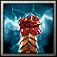

- 主要屬性 智慧
攻擊範圍 600
- 基礎護甲 5
基礎攻速 1.8
- 基礎攻擊 68 - 76
基礎跑速 300
傳說中的"雷神的化身"立花道雪，當他的父親臥病在床時，立花道雪代父出征，這是他的初陣。據說立花道雪率領為數僅僅三千的軍隊連夜趕到敵人城下，翌晨發動猛攻，不出一天便把城池攻下。立花道雪的初陣，一場石破天驚的初陣，名震天下。
舉起禦魔之盾，將可以獲得魔法免疫，但是會因為做出防禦的姿勢而降低80%移動速度。
本技能為切換技能，舉盾時可提高魔法抗性。
召喚天降閃電打擊指定的區域，每秒造成(40/80/120/160)傷害，持續10秒。
-
-
E
雷電桎梏
-
120/140/160/180
-
18
以雷電困住目標敵軍，使他無法動彈(1/2/3/4)秒，每秒造成175傷害。
需維持施法。
-

-
R
雷霆閃電
-
50/70/90/110
-
4
召喚出扇形的閃電，擊中3個敵人，每個敵人會受到(180/320/460/600)傷害 。
-
-
T
雷神之怒
-
300/335/370
-
145/135/125
在原地上空召喚出雷雲，雷雲每秒會自動對範圍1500內的敵人打出(225/310/400)真實傷害的擴散閃電，並且在雷雲範圍內的所有敵人都會受到靜電影響，減少35%的移動速度。雷雲持續(15/17/19)秒。
學習等級為6/12/18，冷卻時間隨技能等級提升降低。
永久性的提升(3/6/9/12)靈活、智慧和力量。